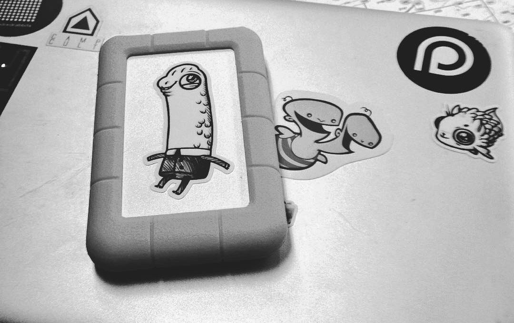

data storage
Hardware failure is common on boats due to the hostile environment. Saltwater is the kryptonite of electronics. This is why it is important to backup data often to avoid losing work. There are advantages and disadvantages with all methods of data storage, but I’ll outline the most useful ones:
Cloud storage: For a fee, you can back up your data online and sync files from your desktop. This method doesn’t eliminate physical storage as data can’t be synced to the cloud without a connection. Offloading data storage to a centralized service is problematic in other ways, because services have rules and owners and processes which can complicate things. For instance, country politics have made it so that Google restricts access to some of its business services in certain countries or regions, such as China, Crimea, Cuba, Iran, Sudan, and Syria. Whatever data you have stored with Google Drive, if traveling to any of these countries will not be accessible. As conflicts arise, more countries can end up on that list. We keep documents we don’t need regular access to on the cloud, with copies on hard disks.

Hard copies. Paper is evidently a stable and widely accessible material, unlike digital devices which are subject to breakages and obsolescence. There's a good reason books and other documents from centuries ago are still readable today. We like to keep printed copies of websites and other online reference materials, such as grammar guides for writing, or language manuals for coding. Our to-do lists and calendars are also on paper. Keeping data like this means we always have access and aren't limited to our computer's battery. We protect hard copies from moisture and rot, we keep documents in plastic sleeves, or sealed up in plastic boxes.
External hard drives: A hard drive is the best balance of practical and reliable storage. However, hard drives are rated for a limited number of read/write cycles, and can be expected to fail eventually. To prevent data loss due to HD failure, it’s a good idea to store the same data across multiple hard drives.
Offline databases: Keeping an offline collection of websites on computers or HD ensures constant access, and reduces the energy associated with re-loading them repeatedly. It’s possible to save web pages with most browsers by selecting File > Save Page As. To access the page offline, click on the HTML file. Another option is to mirror entire web sites using command-line tools. We keep offline databases full of notes on a variety of subjects to refer to when there’s no internet.
For those who need a vast quantity of reference materials, it's possible to setup an internet in the box on your boat. In short, it permits you to browse through the World’s Free Knowledge (Wikipedia, Khan Academy, OpenStreetMap, E-Books and many others) while offline. You can install an internet-in-a-box using very diverse hardware, like on a Raspberry Pi or on a terabyte HD with a built-in hotspot. This system was originally designed for students with restricted internet access and people in remote areas of the world not served by broadband. You can buy one, or better yet create a digital library filled with content tailored to your needs. This might be especially useful for sailors who homeschool.
Keeping files on the cloud, on hard drives and hard copies gives our floating studio the redundancy required to ensure reliability.